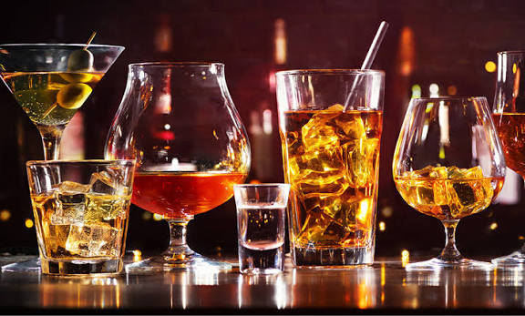
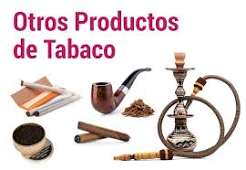
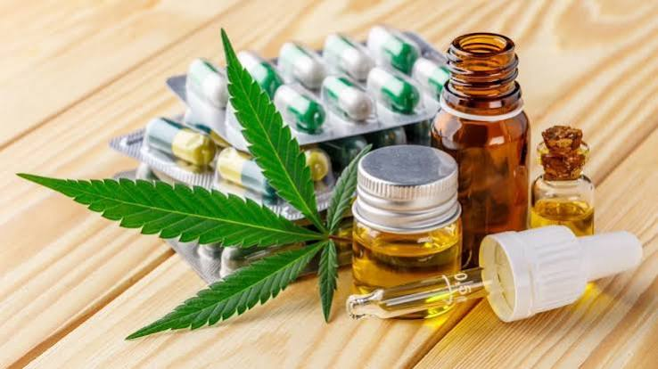
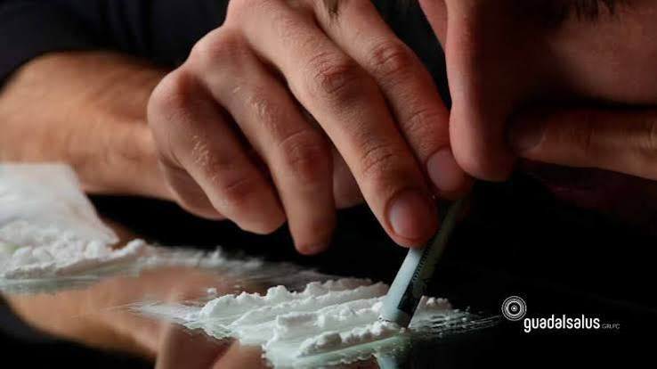
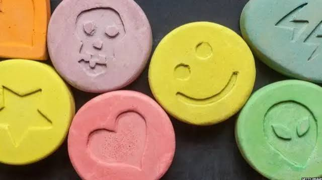
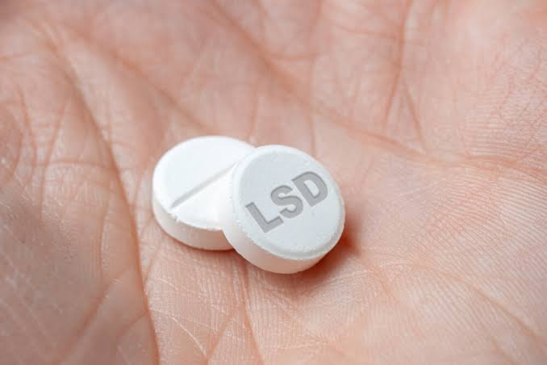
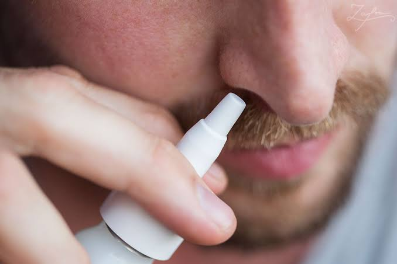
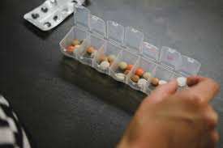

INTRODUCCIÓN
Cada adolescente tiene sueños, capacidades, personas que lo quieren y un futuro que merece ser cuidado. En esta etapa de la vida aparecen nuevas experiencias, preguntas, amistades y presiones; por eso, contar con información clara y confiable puede marcar una gran diferencia. El consumo de sustancias psicoactivas es un tema que debe abordarse sin burlas, miedo ni prejuicios, pero con responsabilidad, porque puede afectar la salud, las emociones, las relaciones familiares, el rendimiento escolar y los proyectos de vida. A veces una persona se acerca a estas sustancias por curiosidad, por querer encajar en un grupo, por imitar a otras personas, por atravesar problemas familiares o emocionales, o porque cree que así podrá aliviar el estrés. Sin embargo, consumir no resuelve el problema de fondo y puede añadir nuevas dificultades. Algunas sustancias modifican la manera en que funciona el cerebro, alteran la percepción y el juicio, disminuyen los reflejos y pueden generar dependencia. Los riesgos varían según la sustancia, la cantidad, la frecuencia, la edad, el estado de salud y el contexto en el que se consume.Este material busca brindar información para comprender qué son las sustancias psicoactivas, conocer sus tipos, causas y efectos, identificar señales de alerta y practicar formas concretas de prevención. La información es una herramienta de protección: cuanto mejor comprendemos las consecuencias y las alternativas saludables, más preparados estamos para cuidar nuestra vida y acompañar a quienes necesitan apoyo. Pedir ayuda no es una debilidad; es una decisión valiente.
¿QUÉ SON LAS SUSTANCIAS PSICOACTIVAS?
Son sustancias que, al ingresar al organismo, actúan sobre el sistema nervioso central y pueden modificar temporalmente el estado de ánimo, la conciencia, la percepción, los pensamientos, la atención, la memoria o la conducta. Algunas son legales para adultos bajo determinadas condiciones; otras son ilegales. Que una sustancia sea legal no significa que sea inofensiva, y el riesgo aumenta cuando se consume sin control, en exceso o a edades tempranas.
CCONCEPTOS IMPORTANTES
1. CONSUMO
Uso de una sustancia. No todos los consumos tienen el mismo nivel de riesgo, pero cualquier consumo en la adolescencia merece atención preventiva.
2. USO DE RIESGO
Patrón de consumo que aumenta la posibilidad de daños físicos, emocionales, familiares, escolares o sociales.
3. INTOXICACIÓN
Conjunto de efectos que aparecen después de consumir una sustancia. Puede alterar el juicio, la coordinación, la respiración o el nivel de conciencia y requerir atención urgente.
4. TOLERANCIA
Cuando el organismo se adapta y la persona necesita más cantidad para sentir efectos parecidos. Puede aumentar el riesgo de daño.
5. DEPENDENCIA
Situación en la que se vuelve difícil controlar el consumo y este ocupa un lugar importante en la vida. Puede incluir dependencia física y psicológica.
6. SÍNDROME DE ABSTINENCIA
Síntomas físicos o emocionales que pueden aparecer al reducir o suspender una sustancia después de un consumo repetido. Requiere orientación profesional.
7. PREVENCIÓN
Acciones que reducen los riesgos: información confiable, habilidades para decidir, apoyo emocional, vínculos saludables y acceso temprano a servicios de ayuda.
TIPOS DE SUSTANCIAS PSICOACTIVAS
1. ALCOHOL

Se encuentra en bebidas como cerveza, vino y licores. Puede afectar el juicio, la coordinación y los reflejos; el consumo excesivo puede causar intoxicación grave.2. NICOTINA Y PRODUCTOS DE TABACO

Incluye cigarrillos y otros productos con nicotina. Puede generar dependencia y perjudicar la salud cardiovascular y respiratoria. Los aerosoles de vapeadores también pueden contener nicotina y otras sustancias.3. CANNABIS O MARIHUANA

Puede alterar la memoria, la atención, la percepción del tiempo y la coordinación. En adolescentes puede interferir con procesos de aprendizaje y desarrollo.4. COCAÍNA Y OTROS ESTIMULANTES

Aumentan temporalmente la actividad del sistema nervioso. Pueden elevar la frecuencia cardíaca y la presión arterial, provocar ansiedad, agitación y complicaciones graves.5. EXTÁISIS/MDMA Y OTRAS SUSTANCIAS DE COMPOSICIÓN DESCONOCIDA

Pueden afectar el estado de ánimo y la percepción, además de alterar la temperatura corporal y causar deshidratación o emergencias médicas. La composición real puede variar.6. ALUCINÓGENOS, COMO LSD

Pueden modificar intensamente la percepción y el pensamiento, generando confusión, miedo o conductas peligrosas.7. INHALANTES

Vapores de ciertos pegamentos, solventes, aerosoles u otros productos químicos. No están destinados a ser inhalados; pueden causar daño cerebral y orgánico, arritmias e incluso muerte súbita.8. MEDICAMENTOS UTILIZADOS SIN INDICACIÓN MÉDICA

Algunos fármacos pueden ser peligrosos si se toman en dosis incorrectas, se comparten o se mezclan con alcohol u otras sustancias. Deben utilizarse siguiendo indicación profesional.¿POR QUÉ PUEDE EMPEZAR EL CONSUMO? (CAUSAS)
- Curiosidad o deseo de experimentar sin conocer los riesgos.
- Presión de amistades o miedo a ser excluido del grupo.
- Intento de aliviar tristeza, ansiedad, estrés, soledad o problemas personales.
- Conflictos familiares, falta de acompañamiento o dificultades para comunicarse.
- Imitación de modelos cercanos o mensajes que presentan el consumo como algo normal.
- Fácil acceso a sustancias y falta de información preventiva.
- Baja autoestima, dificultades para poner límites o ausencia de actividades protectoras.
Estas situaciones pueden aumentar la vulnerabilidad, pero no determinan que una persona vaya a consumir. El apoyo oportuno y los factores protectores pueden marcar una diferencia.
EFECTOS EN EL CUERPO Y LA MENTE
- A corto plazo: Cambios en la atención, la memoria, la coordinación, el juicio, el ánimo y el tiempo de reacción; náuseas, mareos, ansiedad, somnolencia o agitación, según la sustancia.
- En la salud mental:Puede empeorar la ansiedad o la tristeza, aumentar la impulsividad y, en algunas personas, desencadenar episodios de confusión o síntomas psiquiátricos.
- En el organismo:Según la sustancia, puede afectar el cerebro, corazón, pulmones, hígado y otros órganos. Mezclar sustancias aumenta la imprevisibilidad y el riesgo.
- En la adolescencia:El cerebro continúa desarrollándose. El consumo puede interferir con el aprendizaje, la memoria, el autocontrol y la toma de decisiones.